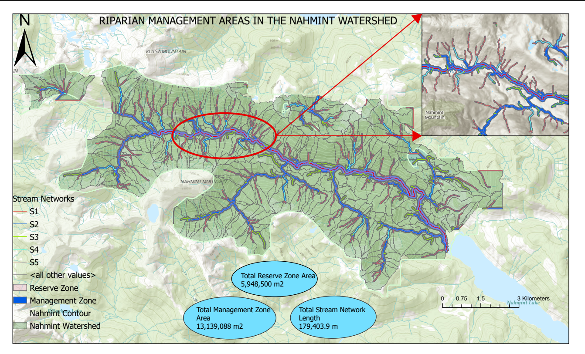
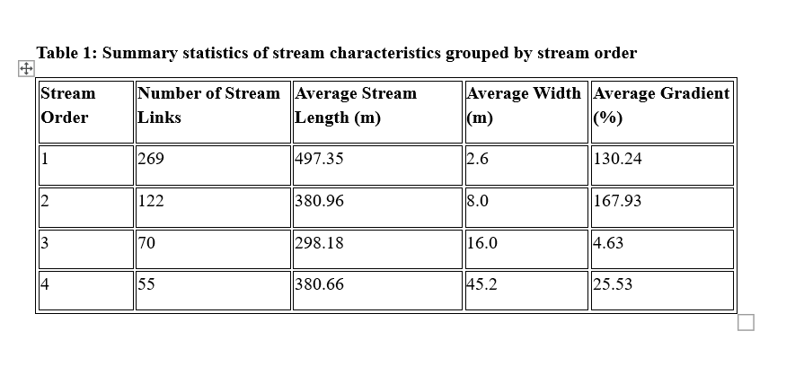

This project defines riparian reserve and management zones within a topographically complex forested watershed in the Nahmint Valley, British Columbia, using a high-resolution Digital Elevation Model (DEM). Stream networks were derived and characterized by order, gradient, and width. BC government stream classification guidelines were applied to assign buffer distances for Riparian Management Areas (RMAs), and watersheds were delineated to assess how forest harvesting runoff could impact stream networks.
| Layer | Description | Source |
|---|---|---|
nahmint_dem | High-resolution DEM of the Nahmint watershed, BC | UBC PostgreSQL Server |
| ArcGIS satellite basemap | Used for visual stream width measurement | ESRI |
| Tool | Purpose |
|---|---|
| QGIS | Exporting the DEM from PostGIS to GeoTiff |
| ArcGIS Pro (Spatial Analyst) | Hydrology analysis, reclassification, zonal statistics, buffering |
| Python (ArcGIS Field Calculator) | Conditional field calculations for stream class and buffer distances |
The Nahmint DEM was preprocessed by filling sinks and computing flow direction and flow accumulation. A flow accumulation threshold was selected to define the stream network, which was then ordered using the Strahler method and converted to polyline features. Stream gradient was calculated per segment using elevation change and segment length from a zonal statistics workflow. Stream widths were measured manually from the satellite basemap for each stream order and averaged. BC stream classes (S2–S6) were assigned using Python expressions combining gradient and width thresholds, and reserve and management zone buffer distances were calculated accordingly. Watersheds were delineated using the flow direction and stream link rasters, and contour lines were generated to support terrain interpretation.

Map showing watersheds, contour lines, stream network symbolized by stream class, an inset map of example RMAs, and total reserve/management zone area and stream network length

Summary statistics of stream links, average length, width, and percent gradient grouped by stream order